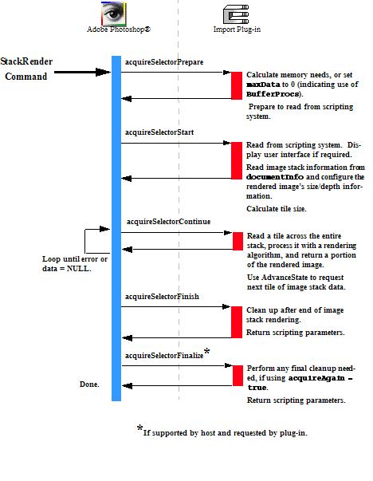

|
|
Adobe Photoshop SDK |
|
Writing Stack Renderer Plug-insStack Renderer plug-ins are used to render a stack of images (defined as a smart object) into a single image; a typical application includes stacking multiple low exposure images and rendering them into a single, clearer image.For descriptions of the sample Stack Renderer plug-ins provided with the SDK, see Stack Renderer Samples.
Stack Renderer plug-ins are based on the Import plug-in. You define the plug-in through the PiPL resource as an Import plug-in When the user invokes a Stack Renderer plug-in module by selecting its name from the Layer > Image Stacks > Image Stack Rendering submenu, Photoshop calls it with the sequence of selector values shown in the figure below. Since Stack Render Plug-in are based on Import plug-ins, Photoshop calls them with the import selectors. The actions the Stack Renderer plug-in needs to take for these selectors are discussed in more detail below.

Handling the Prepare SelectorThe prepare selector (acquireSelectorPrepare) allows the plug-in to negotiate with Photoshop for memory, through theAcquireRecord::maxData field. However, the memory requirements for a typical Stack Renderer plug-in vary considerably depending on the size of the image stack. We generally recommend using the Buffer Suite Callbacks, and allocating memory dynamically in the handler for the continue selector.
To inform Photoshop that you do not need to reserve memory for the plug-in, the handler for this selector should set Handling the Start SelectorThe start selector (acquireSelectorStart) allows the plug-in to provide Photoshop with the mode, size and resolution of the image being returned, so it can allocate and initialize its data structures.
For the Stack Renderer plug-in, this information is usually based on characteristics of the image stack. The
If an indexed color image is being rendered, the plug-in should also set The start selector handler should also calculate the size for a stacked tile, that is, a vertical slice of the entire image stack that the plug-in can process at one time. Typically, the plug-in requests a small chunk of image stack data as a stacked tile from Photoshop, because the memory requirements to process the entire stack of complete images at the same time are generally prohibitive. The optimal stacked tile size is based on the amount of memory Photoshop can release, the size of the images and the number of images in the stack. This tile size is used in the continue selector handler to request a portion of the image stack to process. See the Stack Renderer Samples for an example of determining an appropriate tile size. During the call for this selector, the plug-in can also update its parameters based on passed in scripting parameters, and show a user interface, if necessary. See Stack Renderer Modules and Scripting. Handling the Continue SelectorIn the Stack Renderer continue selector (acquireSelectorContinue), the plug-in reads a stacked tile of the image stack data from theAcquireRecord::documentInfo data structure, uses a rendering algorithm to process the image stack, and then writes the rendered tile of image data back to AcquireRecord::data field. It then requests the next tile of data from Photoshop, using the AdvanceStateProc. Photoshop continues to call the plug-in with this selector until the plug-in either returns an error, or sets the AcquireRecord::data field to NULL.
The The area (or tile) of the image the plug-in returns is specified by:
There are no restrictions on how the pieces tile the image; horizontal and vertical strips are allowed, as are a grid of tiles.
The
Handling the Finish SelectorThe Stack Renderer finish selector (acquireSelectorFinish) allows the plug-in to clean up after rendering an image stack.
This call is made if and only if the
If your plug-in is scripting-aware and it has changed any initial parameters, it should pass a complete descriptor back to the scripting system in the Handling the Finalize SelectorThe finalize selector (acquireSelectorFinalize) is not usually required by Stack Renderer plug-ins. Its purpose has to do with importing multiple images, and is not necessary for Stack Renderers.
To prevent Photoshop from calling your plug-in with this selector, set Stack Renderer Modules and ScriptingThe scripting system passes its parameters at every selector call. While it is possible to use the scripting system to store all your parameters, for backwards compatibility, it is recommended you track your parameters with your own globals. Once your globals are initialized, you should read your scripting-passed parameters and override your globals with them. The most effective way to do this is:
This way, the scripting system overrides your parameters, but you can use the initial values if the scripting system is unavailable or has parameter errors, and you can use your globals to pass between your functions. |